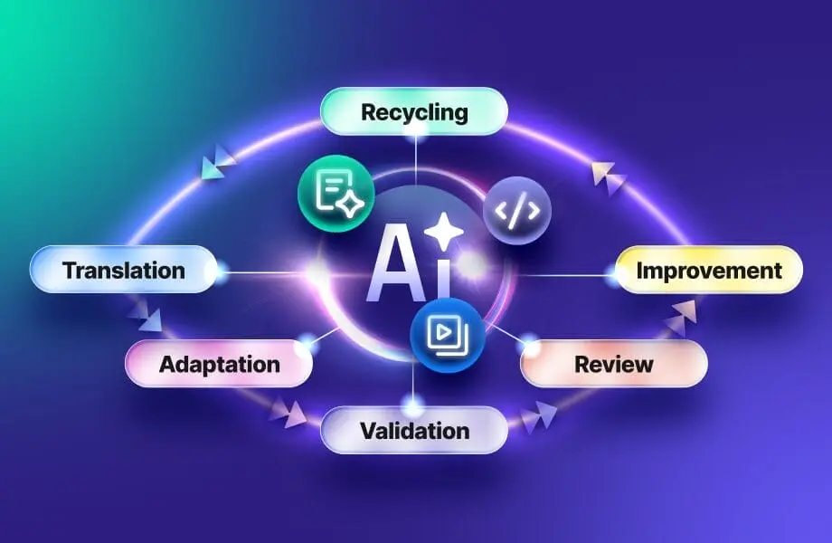

定义
生成式工具根据你给它的文字和训练里的模式起草。它不知道你网站上哪一句才是规格。如果草稿把限值说成更强的承诺，页面就在陈述数据表里没有的话。Mika Visibility 把这看成 GEO 健康轨道上的证据问题。它不把通顺的草稿当成证据，也不声称 ChatGPT、Gemini 或任何其他产品会引用你。
短答
生成的本地化草稿是措辞提议，不是第二套产品事实来源。只有在有人把产品名、数字、单位和排除项对照已经拥有这些事实的页面核对之后，才能发布。

哪些字段必须说同一件事
每种语言为该事实保留一个负责的 URL。审阅者比较公司名、产品名、规格、应用，以及任何说法所附的条件。问题覆盖保持诚实：已回答、部分回答或未覆盖。听起来完整、却漏掉排除项的草稿，仍是部分回答。
页面上的问题
不要把草稿盖到 HTML 上就当完成。发布的页面必须用正文写上核对过的句子，而不是只留在对话记录或截图里。该语言的内部链接应该用点名文档的锚文本指向数据表。
随页面一起走的信号
hreflang 仍然只标注你真正发布的对照页。还不是真实 URL 的生成页面，不应放进站点地图。x-default 留在英文 URL。这些标记都不承诺进入某个回答界面。
聊天记录不是证据。证据是线上页面仍然与之相符的规格。 Mika Visibility 要求每种已发布的语言保留同一套公司名、产品名、规格和应用，同时允许该市场的问题有真正的深度。英语在站点根目录，中文在 /zh/，不要增加 /en/ 前缀。hreflang 使用 en、zh-Hans，以及指向英文 URL 的 x-default。健康分数不会自动变成增长分数。
要检查什么
- 把草稿里的每个数字和单位与负责页面对照。
- 拒绝数据表没有的新增说法。
- 把核对过的句子发布在 HTML 正文里。
- hreflang 和站点地图只留给已经存在的 URL。
它不声称什么
审阅生成草稿，不保证搜索排名，也不保证被 ChatGPT、Gemini、AI Overviews 或任何其他回答产品引用。Mika 不出售这种位置。
一个结构示例
这是教学示例，不是测量结果。阀门页写密封件适用于某个温度，并且不适用于某种溶剂。翻译草稿保留了温度，删掉了溶剂排除项。修复是拒绝那句话，补回排除项，并复审线上 HTML。示例不点名客户，也不给分数。
常见问题
生成的本地化草稿可以被当成什么？
生成的本地化草稿是措辞提议，不是第二套产品事实来源。只有在有人把产品名、数字、单位和排除项对照已经拥有这些事实的页面核对之后，才能发布。
为什么通顺的草稿不是规格？
生成式工具根据你给它的文字和训练里的模式起草。它不知道你网站上哪一句才是规格。如果草稿把限值说成更强的承诺，页面就在陈述数据表里没有的话。Mika Visibility 把这看成 GEO 健康轨道上的证据问题。它不把通顺的草稿当成证据，也不声称 ChatGPT、Gemini 或任何其他产品会引用你。
审过的草稿能保证被 AI 引用吗？
审阅生成草稿，不保证搜索排名，也不保证被 ChatGPT、Gemini、AI Overviews 或任何其他回答产品引用。Mika 不出售这种位置。
下一步
做一次结构化的 SEO 与 GEO 审计，看健康发现、增长缺口，以及可以执行的蓝图。
更清楚的实体、回答、证据和上下文，让页面更容易被理解和转述。任何回答产品中的结果都不保证。